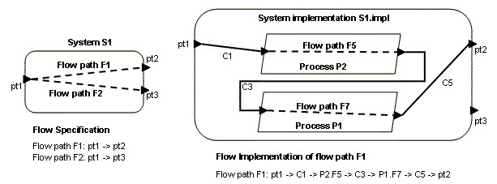

Previous
Next
Previous
Next 
| 6.1 Flow Specifications and Flow Instances |
A
flow specification describes an externally observable flow of information in terms of
application logic through a component. Such logical flows may be realized through ports and
connections of different data types and a combination of data, event, and event data ports.
Flow specifications represent flow sources, i.e., flows originating from within a component,
flow sinks, i.e., flows ending within a component, and flow paths, i.e., flows through
a
component from its incoming ports to its outgoing ports.
Flows
describe actual flow sequences through components and sets of components across one
or more connections. They are declared in component implementations. Flow sequences take
two forms: flow implementation and end-to-end flow. A flow implementation describes
how
a flow specification of a component is realized in its component implementation. An end-to-
end flow specifies a flow that starts within one subcomponent and ends within another
subcomponent. Flow specifications, flow implementations, and end-to-end flows can have
expected and actual values for flow related properties, e.g., latency or rounding error
accumulation.
The
purpose of providing the capability of specifying end-to-end flows is to support various
forms of flow analysis, such as end-to-end timing and latency, reliability, numerical error
propagation, Quality of Service (QoS) and resource management based on operational flows.
To support such analyses, relevant properties are provided for the end-to-end flow, the flow
specifications of components, and the ports involved in the flow to be analyzed. For example,
to deal with end-to-end latency the end-to-end flow may have properties specifying its
expected maximum latency and actual latency. In addition, ports on individual components may
have flow specific properties, e.g., an in port property specifies the expected latency of data
relative to its sensor sampling time or in terms of end-to-end latency from sensor to actuator to
reflect the latency assumption embedded in its extrapolation algorithm.
| 6.1.1 Flow Specification Declarations |
A
flow specification declaration in a component type specifies an externally visible flow through
a component’s ports, port groups, or parameters. The flow through a component is called a
flow path. A flow originating in a component is called a flow source. A flow ending
in a
component is called a flow sink. Error! Reference source not found. illustrates
a system
type GPSSystem with three ports and two
flow specifications. These are the flows through
GPSSystem and out of GPSSystem that are externally visible.
The flow path symbol is
connected to two ports, while flow source symbol connected to one port.
Figure 28: Flow specifications.
The
ports identified by the flow specification do not have to have the same data type, nor do
they have to be the same port type, i.e., one can be an event port and the other an event data
port. Multiple flow specifications can be defined involving the same ports. For example, data
coming in through an in port group is processed
and data derived from one of the port group’s
contained ports is sent out through different out ports. This allows logical flows of information
through components to be characterized by attributing flow specifications and the ports
involved in flow specifications with relevant AADL property values. Properties other than the
set of predeclared properties can be introduced through the AADL Property Set concept.
| 6.1.2 Flow Implementation Declarations |
A
flow implementation declaration in a component implementation specifies how a flow
specification is realized in the implementation as a sequence of flows through subcomponents
along connections from the flow specification in port to the flow specification out port. The
system implementation for system S1 is shown on the right of Error! Reference source not
found.. It contains two process subcomponents P1 and P2. Each has two ports and a flow
path specification as part of its process type declaration. The flow implementation of flow path
F1 is shown in both graphical
and textual form. It starts with port pt1, as specified in the flow
specification. It then follows a sequence of connections and subcomponent flow specifications,
in our example as the sequence of connection C1, subcomponent flow specification P2.F5,
connection C3, subcomponent flow specification P1.F7, connection C5. The flow
implementation ends with port pt2, as specified in the flow specification for F1.

Figure 29: Flow Specification &
Flow Implementation
Flow
implementations can be declared for specific modes and for specific mode transitions.
Furthermore, flow implementations can have mode-specific property values. This
accommodates modeling of flows in modal systems. Figure 30 illustrates how a flow
implementation can be graphically visualized using the selection technique for mode modeling. A
flow implementation can be shown in black by selecting the flow of interest as a flow
specification in the text box. Subcomponent flows and connections that are not part of the flow
are shown in gray. An editor can use this visualization both for displaying flows and for defining
flows. End-to-end flows can be visualized in a similar manner. The text box has a
compartment showing end-to-end flow names. Selection of one results in showing the flow in
black while graying out the rest.
Figure 30: Flow Implementation Selection.
Note
that the flow implementation is expressed in terms of flow specifications of its
subcomponents. This allows us to analyze flows in the declarative AADL model one
component at a time. The property values of a flow specification can be validated by the
property values derived from the flow implementation based on flow specification property
values of its subcomponents. In this case, detailed information about the implementation of
these subcomponents is not necessary. This supports a specification-based low-fidelity
analysis of architecture models early in the life cycle before system details are available.
Once
component implementations are known at multiple levels, actual flow properties such as
latency can be propagated up the architecture hierarchy. As we will see later in this section,
such propagation up the architecture hierarchy can even be performed on the declarative model.
| 6.1.3 End-To-End Flow Declarations |
An
end-to-end flow is a logical flow through a sequence of system components, i.e., threads,
devices and processors. An end-to-end flow is specified by an end-to-end flow declaration.
End-to-end flow declarations are declared in component implementations, typically the flow
implementation in the system hierarchy that is the root of all threads, processors, and devices
involved in an end-to-end flow. The subcomponent identified by the first subcomponent flow
specification referenced in the end-to-end flow declaration contains the system component that
is the starting point of the end-to-end flow. Succeeding named subcomponent flow
specifications contain additional system components.
Figure 31: An End-To-End Flow Declaration
In
the example shown in Figure 29, the flow specification F7 of process P1 may have a flow
implementation that includes flows through two threads which is not included in this view of the
model. The identified subcomponent of the final referenced subcomponent flow specification
contains the last system component of the end-to-end flow.
| 6.1.4 End-To-End Flow Instances |
Flow
declarations are associated with individual components. Flow implementations End-to-
end flow declarations are specified in terms of the immediate subcomponents. For a system
instance these flow declarations get recursively expanded the same way subcomponent
declarations results in a hierarchy of component instances in an AADL instance model or a
collection of connection declarations results in a semantic connection.
Figure 32: Flow Declarations and
the System Hierarchy
Figure
32 shows how a flow sink specification gets expanded in a three level system hierarchy.
The flow sink specification FS1 for system S1 is expanded into the connection C1 and flow
sink specification FS2 of process P2, which in turn is expanded
into the connection CC1 and
the flow sink specification FS1 of thread T5. In short, the ultimate flow sink of the flow sink
specification of system S2 is the flow sink of thread T5.
Figure
33 illustrates the expansion of an end-to-end flow declaration into the end-to-end
instance flow in a system instance model. Note that the end-to-end flow declaration is
declared with the component implementation that is the common root of all system components
involved with the end-to-end flow. In our example it is the component implementation that
contains systems S0, S1, and S2 as subcomponents. The ultimate flow source of the example
end-to-end flow is the flow source in thread T0. The ultimate flow sink is the flow sink in
thread T5. The end-to-end
instance flow follows the semantic connection from thread T0 to
thread T1, the semantic connection
from T1 to T2, and the semantic connection
from T2 to
T3. Note that the flow path F1 of system S1 represents the flow through
both threads T1 and
T2. We have used dashed lines
to mark the end-to-end instance flow in Figure 33.
Figure 33 End-To-End Flow in a System
Instance
| 6.1.5 Textual Flow Declaration Examples |
process foo
features
Initcmd: in event port;
Signal: in data port gps::signal_data;
Result1: out data port gps::position.radial;
Result2: out data port gps::position.cartesian;
Status: out event port;
flows
-- two flows split from the
same input
Flow1: flow path signal ->
result1;
Flow2: flow path signal ->
result2;
-- An input is consumed by
process foo through its initcmd port
Flow3: flow sink initcmd;
-- An output is generated
(produced) by process foo and made
available
-- through its port Status;
Flow4: flow source Status;
end foo;
process implementation foo.basic
subcomponents
A: thread bar.basic;
-- bar has a flow path fs1
from p1 to p2
-- bar has a flow source fs2
to p3
C: thread baz.basic;
B: thread baz.basic;
-- baz has a flow path fs1
-- baz has a flow sink fsink
connections
conn1: data port signal ->
A.p1;
conn3: data port C.p2 ->
result1;
conn4: data port A.p2 ->
C.p1;
conn5: event port A.p3 ->
Status;
connToThread: event port initcmd
-> C.reset;
flows
Flow1: flow path
signal -> conn1 -> A.fs1 -> conn4 ->
C.fs1 -> conn3 -> result2;
Flow3: flow sink initcmd ->
connToThread -> C.fsink;
-- a flow source may start
in a subcomponent,
-- i.e., the first named element
is a flow source
Flow4: flow source A.fs2 ->
connect5 -> status;
-- an end-to-end flow from
a source to a sink
ETE1: end to end flow
A.fs2 -> conn4 -> C.fsink;
-- an end-to-end flow where
the end points are not sources or sinks
ETE2: end to end flow
A.fs1 -> conn4 -> C.fs1;
end foo.basic;